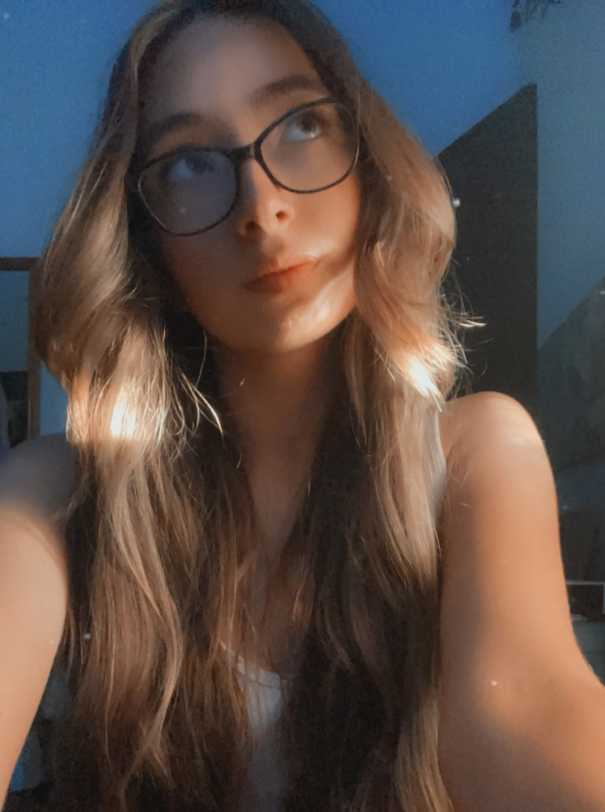

about me!
As I mentioned before, I'm a graphic design student! Creating things has always been a big part of my life, and that's one of the many reasons why I wanted to become a graphic designer. My favorite things to create would have to be illustrations and character art, but I also enjoy typography and photography. Whenever I have time to myself, I love to spend time with my cats, play video games like Devil May Cry, Overwatch 2, and Marvel Rivals, or catch up on my favorite shows!
Throughout my education, I've always had at least one creative class. In middle school, I took part in a gifted arts class for some time, and then in high school, I discovered my passion for graphic design and photography in my yearbook classes. While I'm at NMSU-A, I took a few introductory courses in Adobe Photograph, Illustrator, and InDesign to have more knowledge and experience with graphic design.